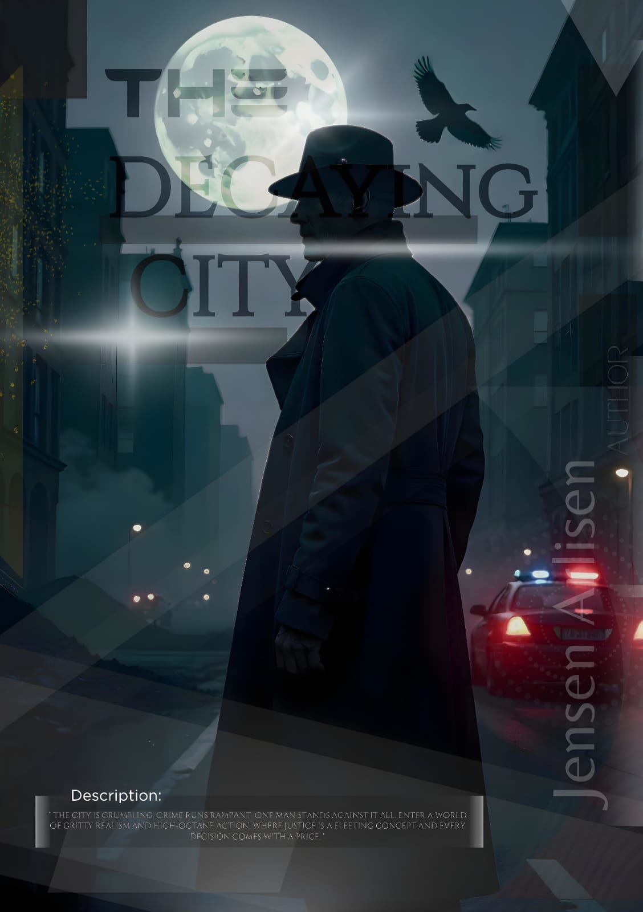

Ini adalah paragraf pertama di website baru saya Borneo Writers Club. Borneo Writer's Club yang pertama kali dibuat di Indonesia, ucap terima kasih atas kerja keras Jensen Arlisen, Mrs. Rita MF Jannah, dan teman-teman Club.
Borneo Writers Club sudah berdiri sejak 28 July 2024. Di Borneo Writer's Club ini merupakan tempat untuk anak muda Borneo dapat berkreasi dan memaparkan ide kreatifnya dengan bebas. Club ini telah dikembangkan oleh dua orang penulis, sebelum terbentuknya Club ini Jensen Arlisen yang merupakan seorang Author pemula sudah pernah berkerjasama sebelumnya dengan dua orang Author lainnya, "The Decaying City" yang di tulis oleh Jensen Arlisen dengan dua teman lainnya, kini Novel "The Decaying City" masih beroperasi sampai sekarang, Jensen Arlisen yang telah melanjutkan Novel "The Decaying City" seorang diri.

Sebuah kisah tentang kehancuran dan kota yang terlupakan. Apakah kau berani memasuki kota yang terbengkalai?
Baca SekarangBorneo writers' club adalah komunitas yang diperuntukkan bagi anak bangsa Borneo berkreasi dan mengekspresikan dirinya ke dalam suatu karya sastra.
Ketua: Jensen Arlisen
Pendamping: Mrs. Rita MF Jannah
Wakil Ketua: -
Alsa
Ainool
GoodOlJenkins
Toppinges.teler